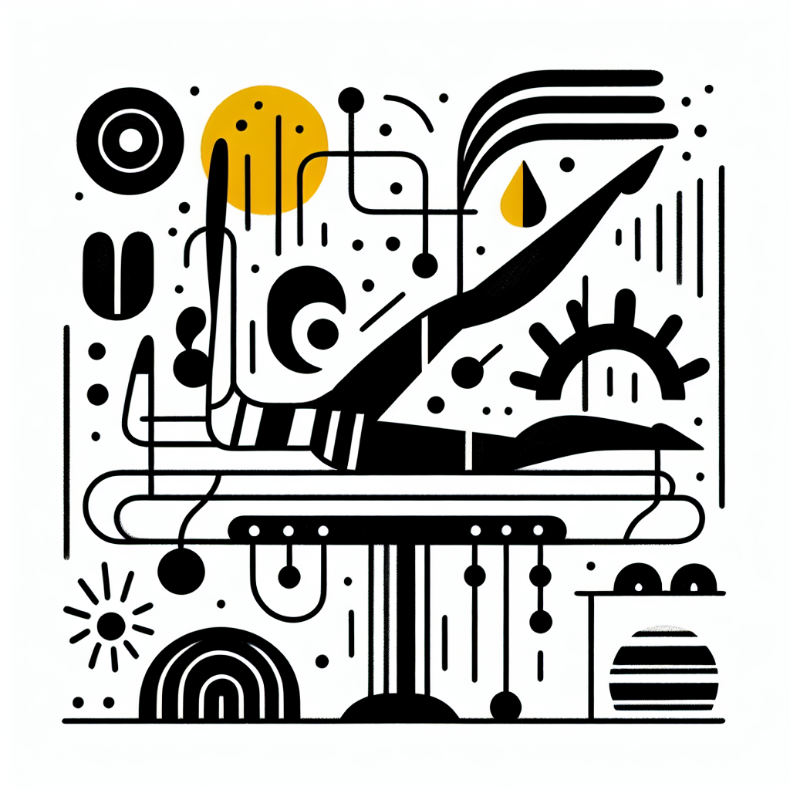

Pourquoi le Lagree est le complément idéal du Running
Pourquoi le Lagree est le complément idéal du Running
Envie de booster vos performances de running tout en vous préservant des blessures ? Que vous soyez un coureur aguerri de la plage d’Anglet ou un runner du week-end, il est essentiel d'intégrer des exercices de renforcement musculaire à votre routine. Et c’est là que le Lagree entre en scène ! Découvrez pourquoi cette méthode haute intensité mais à faible impact est votre meilleure alliée pour courir plus vite, plus loin et avec plus de plaisir.
Le Lagree : une méthode révolutionnaire pour les runners
Le Lagree est bien plus qu’un simple entraînement – c'est un art de vivre qui s’intègre parfaitement dans le style de vie 'Healthy & Surf' de la côte basque. Pratiquée dans notre Studio DOZ à Anglet, cette méthode se déroule sur la MegaPro, une machine de pointe qui vous pousse à dépasser vos limites de manière douce pour vos articulations.
- Renforcement musculaire complet : Le Lagree sollicite tous les muscles grâce à des mouvements lents et contrôlés qui favorisent une endurance musculaire optimale.
- Prévention des blessures : En renforçant les muscles stabilisateurs, le Lagree aide à prévenir les blessures courantes chez les runners.
- Simplicité et efficacité : Pas de mouvements superflus, chaque séance est un concentré de qualité et de résultats.
Améliorer votre posture et votre technique de course
Avez-vous déjà remarqué comment une mauvaise posture peut affecter votre foulée ? Le Lagree vous aide à corriger ces défauts grâce à un travail approfondi sur la sangle abdominale et le dos.
Pourquoi c'est important pour les runners :
- Une meilleure stabilité pendant les courses longues.
- Des appuis solides qui permettent d'améliorer la propulsion.
- Des épaules décontractées et un buste droit pour une foulée plus fluide.
En renforçant votre posture, non seulement vous améliorez votre performance globale, mais vous réduisez également le risque de douleurs et de tensions accumulées lors de vos entraînements de running.
Endurance musculaire et résistance mentale
C'est bien connu, le running exige beaucoup d’endurance, tant physique que mentale. Et ici encore, le Lagree se montre un excellent compagnon.
- Les séances sur MegaPro testent non seulement votre force physique, mais aussi votre capacité à rester concentré et motivé.
- Les mouvements lents et contrôlés développent une endurance musculaire exceptionnelle qui se traduit par une résistance accrue lors des courses.
- Le Lagree encourage une attention accrue aux détails et à la respiration, des qualités précieuses pour tout coureur.
Récupération active dans un cadre unique
Après une séance intense, rien de mieux qu’un moment de détente. Et c'est là que le Coffee Shop de DOZ entre en jeu. Équipé de délicieuses options de snacks sains et de cafés torréfiés avec soin, c'est l'endroit parfait pour récupérer tout en douceur.
Pourquoi choisir notre Coffee Shop :
- Une cuisine saine et locale qui s'adapte à vos besoins nutritionnels post-entraînement.
- L’occasion de déguster un café de spécialité, parfait pour un moment de réconfort bien mérité.
- Un espace lumineux au design minimaliste—béton, bois, métal—qui invite à la détente et à la convivialité.
L'expérience DOZ : l'équilibre parfait entre effort et réconfort
Chez DOZ, notre philosophie 'Instant Brut' célèbre la simplicité et la qualité. Ce mantra, nous l'appliquons au Lagree, au running, et à chaque tasse de café que nous servons. Nous croyons que c'est cet équilibre entre effort intense et réconfort simple qui mène à un mode de vie sain et épanouissant.
Venez découvrir comment le Lagree peut transformer votre course à pied ! Que vous cherchiez à améliorer vos performances ou simplement à explorer une nouvelle manière de bouger, notre équipe chez DOZ est prête à vous guider. Réservez dès maintenant votre cours de Lagree et offrez-vous un moment au Coffee Shop pour une immersion totale dans l'univers DOZ.
Nous vous attendons pour une expérience unique sur la côte basque !